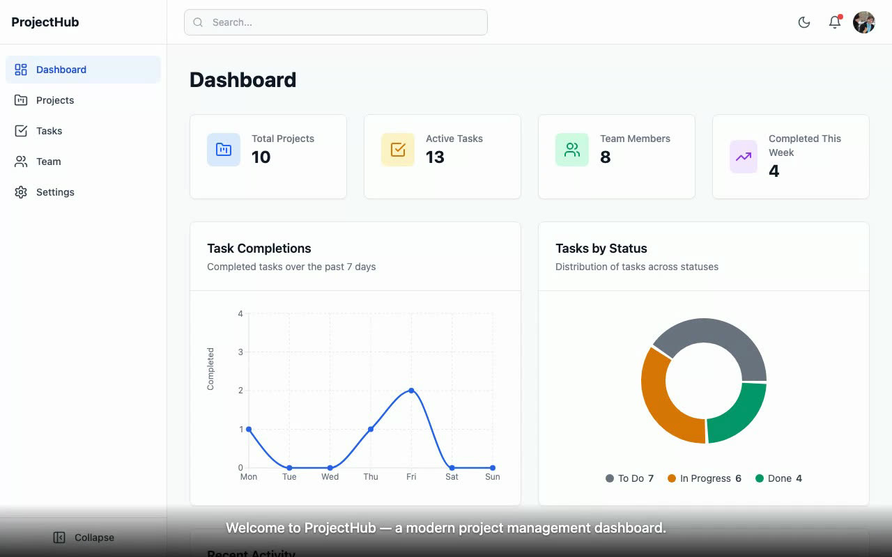
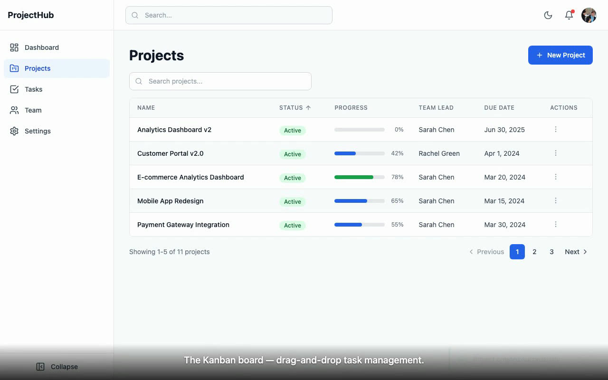
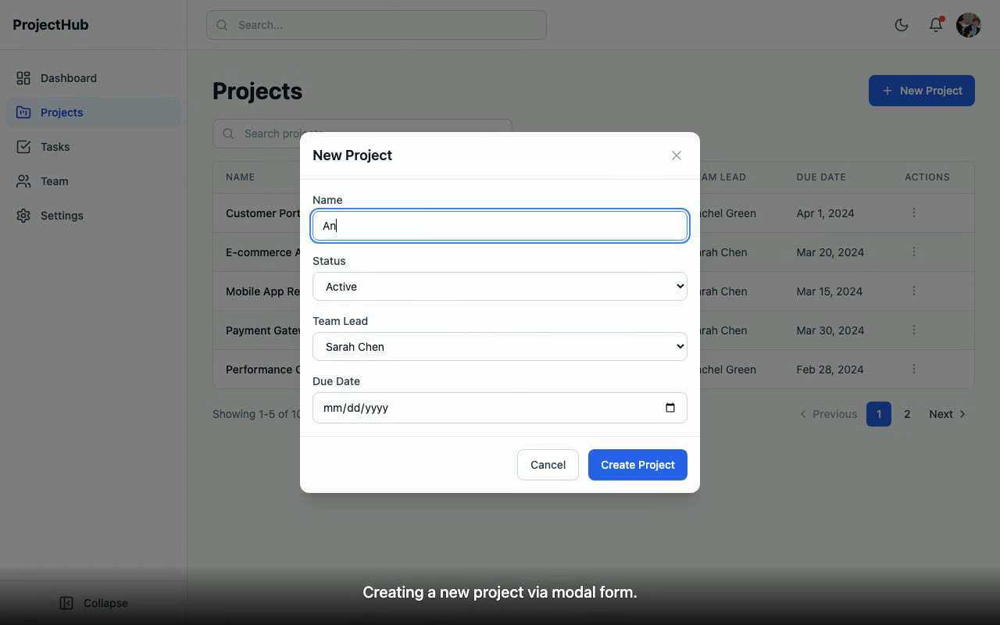

First published on LinkedIn on January 29, 2026. Rewritten for this site in October 2026. Code: harness-v2-test at fc9e09c, branch feature/dashboard-mvp.
What changed since January
In June 2026 the pipeline on this page became a reusable skill, playwright-demo-video in my public ai-builder-kit. Two lessons from January went into it. The voice timings in January were estimates, traced from the wait calls in the script; the skill records exact timestamps while the spec runs. And it adds a data check before any narration gets written, because, in the skill's own words, "you cannot narrate what doesn't exist." The portfolio entry has the later demo.
1. When AI builds more than you can keep track of
AI builds so much now that I can't track all the features. By late January I had ten product specs going across AEM Edge Delivery Services, da.live, React and platforms I had never coded in before. The specs are complex, they take iterations, and I don't remember what we decided on half of them. No one person can memorize all of it.
Reading the code and the test results didn't scale either. I needed to see it run. So I had AI demo its own work back to me: a live Playwright demo with captions, the way a team shows its work at the end of a sprint.

The app in this video is the test project for my generic harness, the one I used to try out version two of it. The dashboard came out of a 24-task harness run that finished on January 29. A harness, in my vocabulary, is a program that plans the work into tasks and runs a research, build and validate loop on each one without me in the chair.
2. Asking the harness for a demo, as an enhancement
The demo went into the harness as an enhancement to the existing build, not a fresh start. This is the input I gave it, close to word for word:
Why: so I can show a demo of this thing to others and have AI always drive it and fix it as needed. What: a Playwright headful script with a combined voice-over script with timing. How: Playwright headful script, just markdown for voice-over for now. It should show off all the work the agent has done! If we have defects with functionality we should fix it, or fix the demo.
I asked it to ask me three questions first. I answered natural pace, a harness enhancement task, and two versions: get a highlights reel working first, then build a full tour. Then I added a research requirement, so the harness would spend cycles on Playwright best practices for headed demos before writing any script: demo patterns, drag-and-drop reliability, pacing, viewport resizing, selector strategy and the Playwright config itself.
The harness planned three new tasks on top of the existing ones. All three passed on the first attempt, about an hour in total, per the run's progress log:
| Task | What it built | Time |
|---|---|---|
| 20 | Demo infrastructure: a demo Playwright config, shared helpers for pacing, scrolling, viewport and drag-and-drop, and data-testid attributes for stable selectors | 16 min |
| 21 | The highlights demo script with a voice-over document, plus app fixes found along the way | 20 min |
| 22 | The full tour demo script with its voice-over document | 19 min |
Then I watched both demos run. I asked for the full tour to be longer and to show every page in mobile view, because I was hoping for something closer to four minutes. After five test runs it landed at 3.7 minutes, and I said that was fine. That change is commit 03c009e.
3. Captions injected into the page right before each click
That evening a separate pass turned the voice-over markdown into a caption track that lives inside the page. The demo script injects one fixed <div> at the bottom of the viewport and swaps its text as it goes. If a navigation wipes the page, the next caption puts the overlay back:
/** Show caption text. Persists until next show or hide. Re-injects overlay if lost after navigation. */async function showCaption(page: Page, text: string): Promise<void> { await page.evaluate(([t, css]: string[]) => { let el = document.getElementById('demo-caption'); if (!el) { el = document.createElement('div'); el.id = 'demo-caption'; el.style.cssText = css; document.body.appendChild(el); } el.textContent = t; el.style.opacity = '1'; }, [text, CAPTION_CSS]); await page.waitForTimeout(300);Each caption goes up right before the action it describes, so the caption and the click stay in sync. Here is the Kanban part of the highlights script, the caption and then the drag:
if (todoCount > 0) { await showCaption(page, 'Moving a task from To Do to In Progress.'); await dragAndDrop( page, '[data-testid="kanban-column-todo"] article[draggable="true"]:first-of-type', '[data-testid="kanban-column-in-progress"]', { steps: 15, holdMs: 150 }, ); await scenicPause(page, 1800); }
The recording comes from Playwright's built-in video capture. A third config runs the captioned scripts headless at 1280 by 800, with the video size matching the viewport, so there is no browser chrome in the frame:
/* Record video at full viewport resolution */ video: { mode: 'on', size: { width: 1280, height: 800 }, }, /* Match the video size */ viewport: { width: 1280, height: 800 },4. Adding a voice track the video waits for
Two days later I wanted the highlights reel to talk. Each of the 21 captions became its own voice clip from ElevenLabs, a text-to-speech service. Then the clips had to land on the video. The first script placed each clip at its caption's time with ffmpeg delays and printed a warning whenever a clip overlapped the next one.
The fix in merge-highlights-v2.mjs was to make the video wait for the voice, never the other way around. A clip starts half a second before its caption, clips never overlap, and there is at least 0.3 seconds of silence between them. When a clip would have to start before the previous one ends, the merge holds the video on one frame for as long as needed:
function calculateFreezes() { let videoShift = 0; // cumulative freeze time inserted let prevEnd = -Infinity; const freezes = []; for (const cap of CAPTIONS) { const visualNew = cap.startSec + videoShift; let idealStart = visualNew + AUDIO_SHIFT; const earliest = prevEnd + MIN_GAP; if (idealStart < earliest) { // Need a freeze frame to let previous clip finish const freezeDur = Math.ceil((earliest - idealStart) * 10) / 10; // round up to 0.1s freezes.push({ originalTime: cap.startSec, // where to freeze in the source video duration: freezeDur, }); videoShift += freezeDur; idealStart = earliest; } cap.newAudioStart = Math.max(idealStart, 0); prevEnd = cap.newAudioStart + cap.audioDuration; } return freezes;}Below is that same walk with the real numbers: the script's 21 caption times and the lengths of the 21 voice clips committed in the repo. The striped blocks on the video lane are the held frames, each one a place where the previous clip is still talking when the next caption comes up. Slide the voice faster and most of the holds go away. Slide it slower and they pile up.
recorded videoheld framevoice clip
With the clips as recorded, the merge holds the video 7 times, 7.6 s in total, so no clip ever talks over the next caption.
- 0.5 s before caption 2, "Interactive stat cards show key metrics at a glance.", at 0:05.5 in the recording
- 2.2 s before caption 8, "Real-time filtering as you type.", at 0:27.0 in the recording
- 0.7 s before caption 12, "The Kanban board, drag-and-drop task management.", at 0:41.5 in the recording
- 0.6 s before caption 14, "And from In Progress to Done.", at 0:50.0 in the recording
- 1.1 s before caption 19, "Tablet, the sidebar collapses to icons.", at 1:15.0 in the recording
- 1.1 s before caption 20, "Back to desktop, full layout restored.", at 1:17.5 in the recording
- 1.4 s before caption 21, the outro, at 1:19.5 in the recording
calculateFreezes(): the same walk, the script's settings (voice 0.5 s before its caption, 0.3 s minimum gap), and a faster or slower voice modeled as proportionally shorter or longer clips. The caption times were estimates traced from the script's wait calls, the weak spot section 6 comes back to.The last step mixed in a royalty-free music track at about 15 percent volume, low enough to keep the voice on top. That is the cut in the video at the top of this page.
5. Demo prep found bugs, like a sprint demo does
The harness found and fixed bugs while it prepared the demo. When I first wrote this up I listed drag-and-drop issues and features that broke end to end. That is exactly what happens before a real sprint demo: the moment you have to show something live, you click the paths nobody clicked.
It was also in the plan. Task 21's acceptance criteria said that any app feature that fails during demo scripting gets fixed in the app's source code, with drag-and-drop, modals, the theme toggle and the responsive layout named. The change I can point to in the commit history is a small one. Toast notifications closed after 3 seconds, too fast to read at demo pace, so commit 1ba8c6b moved the auto-dismiss to 4.5 seconds. It's the kind of fix you only find by watching the demo.

6. Lessons, and the limits of a generated demo
Here is what I took away in January:
- When AI builds enough volume, the presentation back to the stakeholder becomes the bottleneck. Reading code and test results doesn't scale. You need to see it run.
- Demo prep is its own quality gate, for the same reason it is on a human team.
- I'm the stakeholder now, not the builder. I set the goals across AEM, React and experimental platforms. AI executes, AI presents, and I decide what ships and what iterates.
- This works across what my harnesses produce, so every Edge Delivery site build can come with its own stakeholder demo that walks through every block, every breakpoint and every content interaction.
The limits, plainly. The harness wrote and ran the demo scripts; the caption, voice and music passes after that were separate sessions I asked for. The voice timings were estimates, so a clip could drift from its click, which is what the June skill fixed with recorded timestamps. And the app has no backend, so the demo shows seeded mock data, not a live system.
If you have shown a generated demo to a real stakeholder, I'd like to know whether they trusted it more or less than a person clicking through.